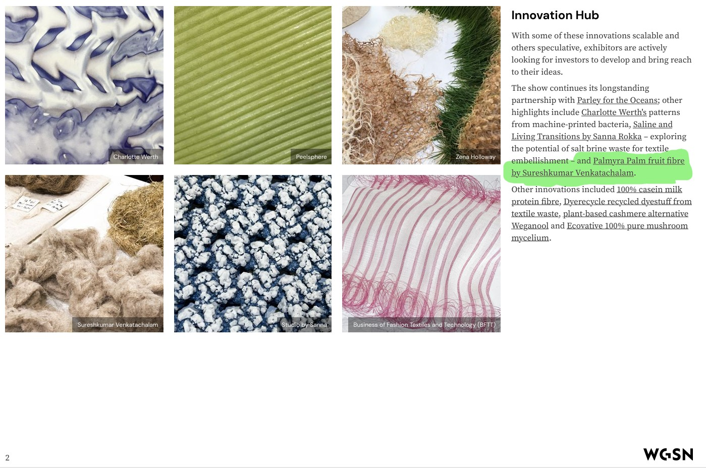

Global Validation
WGSN — whose forecasts shape the buying decisions of over 6,000 brands across 100 countries — singled out Enn Panai's palmyra fibre as a pioneering natural innovation for sustainable fashion. In an industry where trend forecasters are the gatekeepers of commercial viability, WGSN's endorsement is the definitive signal that this material has arrived.

Enn Panai's palmyra fibre was showcased at Future Fabrics Expo London 2023 — the most prestigious international platform where the world's leading sustainable textile innovators present to global buyers, luxury brands, and sustainability directors. Our presence confirmed that a fibre born in a Tamil Nadu village is ready for global fashion markets.